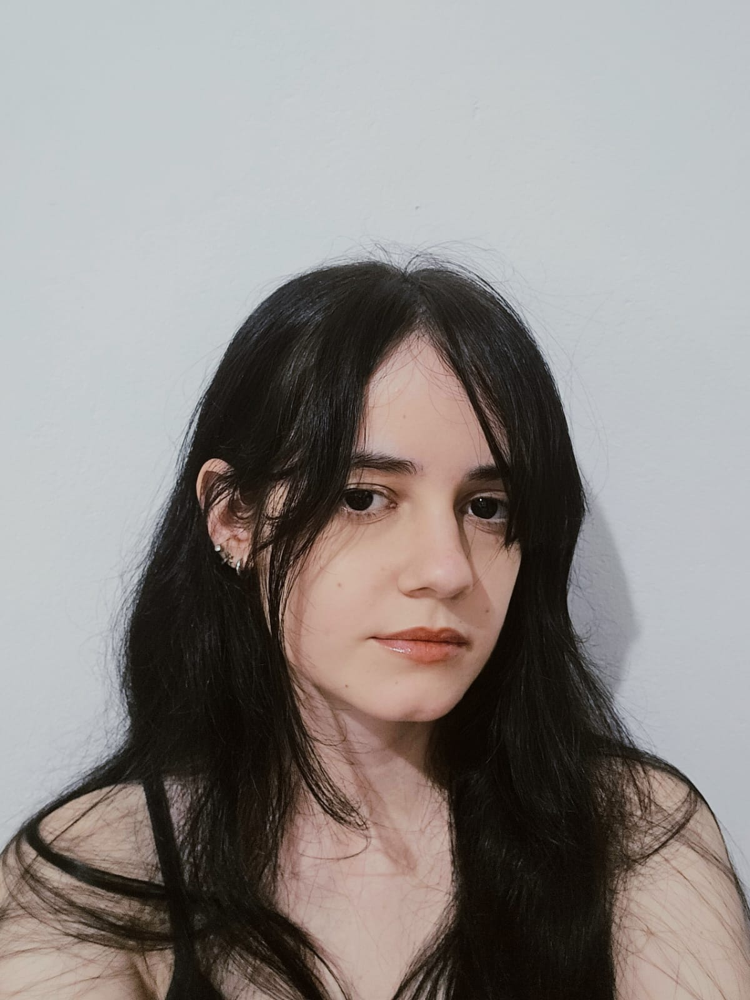

Sobre a Artista
Geovana Molina é apaixonada por arte desde a infância. Suas obras transitam entre pinturas vibrantes, esculturas expressivas e delicadas criações em cerâmica fria. Inspirada pela natureza, emoções e cotidiano, busca transmitir sentimentos únicos em cada peça.
Com formação em artes visuais e participação em exposições regionais, sua trajetória é marcada pela dedicação e inovação. Suas técnicas misturam o clássico e o contemporâneo, resultando em trabalhos originais e cheios de personalidade.
“A arte é a expressão mais sincera da alma.”